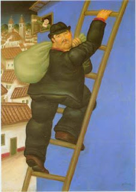

Bava Kamma 78 - A Thief Who Doesn't Pay Fourfold

If someone declared, "It is hereby incumbent upon me to bring a burnt offering," and he then designated a specific ox as the offering, and another person came and stole it, the one who promised the offering is required to replace it. However, the thief can exempt himself from further liability with a lamb, which satisfies the obligation.
If the thief sold all of the stolen animal, except one-hundredth of it, or slaughtered it and made a mistake in the slaughtering so that it became non-kosher in his hands, he pays the twofold payment of an ordinary thief, but doesn't pay the fourfold or fivefold payment.